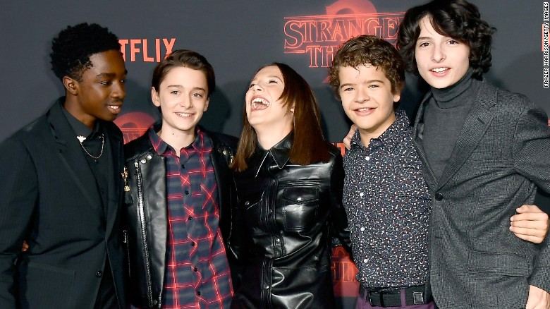

La historia arranca el 6 de noviembre de 1983, en la ciudad de Hawkins, Indiana, cuando Will Byers, de 12 años de edad, tras pasar el día jugando con sus amigos a Dungeons Dragons, desaparece misteriosamente al regresar a casa. Su madre, Joyce, desesperada, comienza la búsqueda de Will, mientras el jefe de policía Hopper comienza a investigar por su cuenta. Poco después de la desaparición de Will, una misteriosa niña, Eleven, con extrañas habilidades aparece en la casa de Mike. Pero, en el desarrollo de la investigación descubrirán que no sólo tendrán que enfrentarse a una misteriosa organización del gobierno, sino a siniestras fuerzas que planean acabar con todos.
Winona Ryder es Joyce Byers, madre de Will y Jonathan Byers. Divorciada de Lonnie, confía en la ayuda de Jonathan, su hijo mayor.
David Harbour es Jim Hopper, jefe del Departamento de Policía de Hawkins. Hopper se divorció después de que su hija joven murió de cáncer, lo que lo dejó devastado y lo llevó a caer en el alcoholismo.
Finn Wolfhard es Michael "Mike" Wheeler, hijo de Karen Wheeler y hermano de Nancy. Concienzudo en sus estudios y bastante inteligente, es uno de los amigos de Will Byers. Se enamora de Once.
Independientemente de la calidad del guión, las interpretaciones de sus actores o la cuidada producción, el éxito de la serie va también ligado indudablemente a la banda sonora creada por Kyle Dixon y Michael Stein, ambos integrantes de la banda Survive. La banda sonora hace retroceder inmediatamente a la década de los 80, no sólo por el aire retro de la música de sintetizador que recuerda bandas sonoras de películas como Tron o Blade Runner, sino por los temas clásicos que incorpora. El día 10 de agosto, Netflix anuncia que editará la banda sonora en dos volúmenes. El primero de ellos verá la luz en plataformas digitales el viernes 12 de agosto de 2016, con 36 temas, y el segundo el día 19 del mismo mes. Junto con Lakeshore Records, Netflix lanzará la banda sonora en formato físico en el mes de septiembre de 2016, los días 16 y 23 respectivamente.